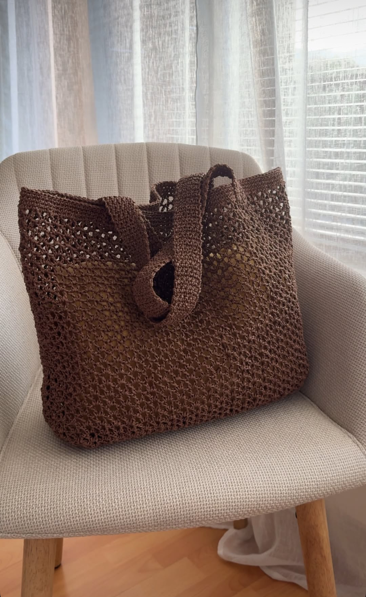

👜 Summer Bags
- 🌾 1. Light & Casual (Boho Style) Handwoven Raffia Summer Bag Bring effortless charm to your summer wardrobe with this handwoven raffia bag
- 🌴 2. Natural & Elegant (Minimal Style) Natural Raffia Tote Crafted from eco-friendly raffia, this summer tote combines texture and function.
- ☀️ 3. Playful & Warm (Lifestyle Blog Tone) Sun Days Raffia Bag Made for long lunches and barefoot walks, this raffia bag is your go-to for every sun-drenched plan. It’s roomy, soft to the touch, and pairs with every linen dress you own.